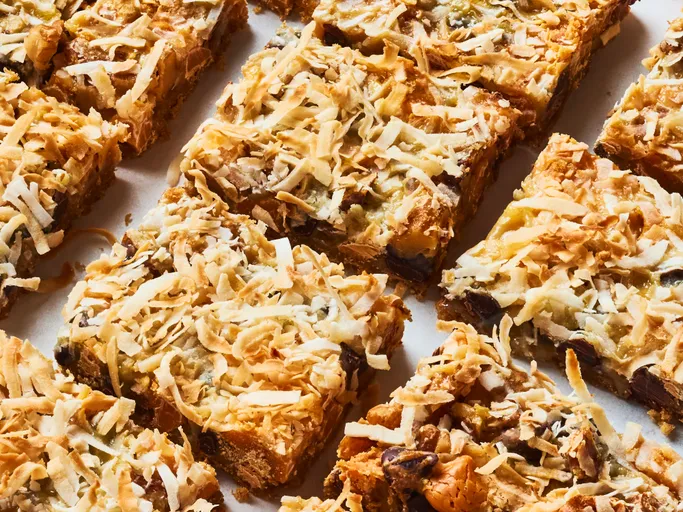

Home
Seven Layer Bars

Description
These layer bars are easy to make with graham cracker crumbs, chocolate and butterscotch chips, coconut, and sweetened condensed milk. They're very rich, and always a hit at parties! Home cooks agree that mixing melted butter with crushed graham crackers creates a crust that holds.
Ingredients
- 1/2 cup unsalted butter
- 1 1/2 cups graham cracker crumbs
- 1 cup semisweet chocolate chips
- 1 cup butterscotch chips
- 1 cup chopped walnuts
- 1 (14 ounce) can sweetened condensed milk
- 1 1/3 cups shredded coconut
Steps
- Preheat the oven to 350 degrees F (175 degrees C).
- Put butter in 13x9-inch baking dish and place in oven until melted.
- Swirl to coat bottom and sides with butter.
- Spread graham cracker crumbs evenly over bottom of pan.
- Layer chocolate chips, butterscotch chips and alnuts over crumbs.
- Pour condensed milk over walnuts and sprinkle with coconut.
- Bake in preheated oven until edges are golden brown, about 25 minutes.
- Let cool completely in the pan before cutting into 36 bars.
Recipe sumbitted by P.Tindall at allrecipes